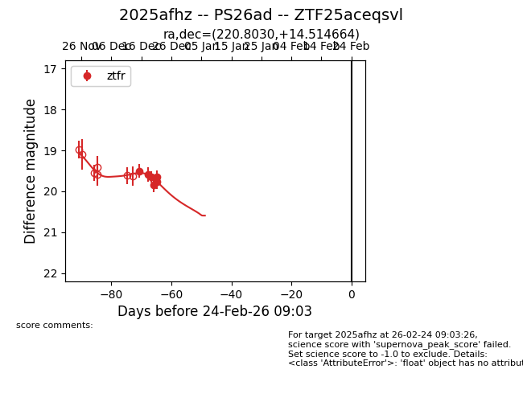
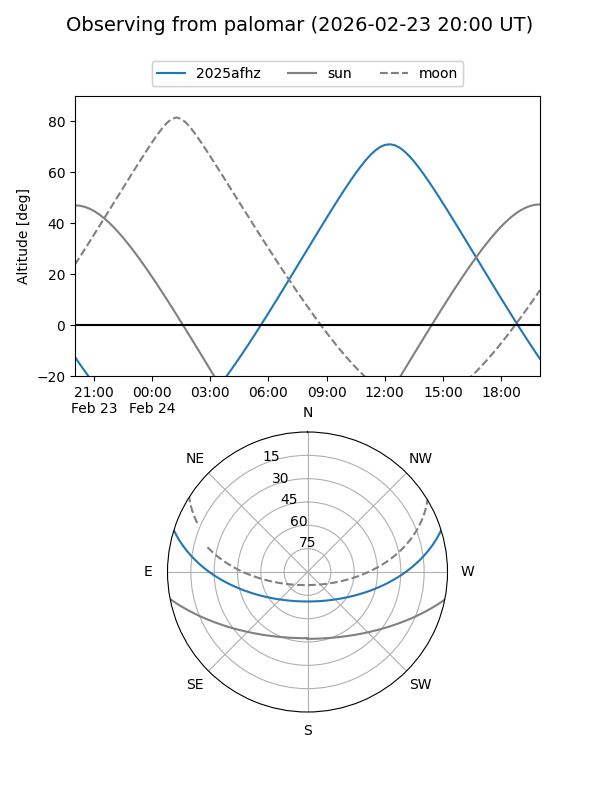
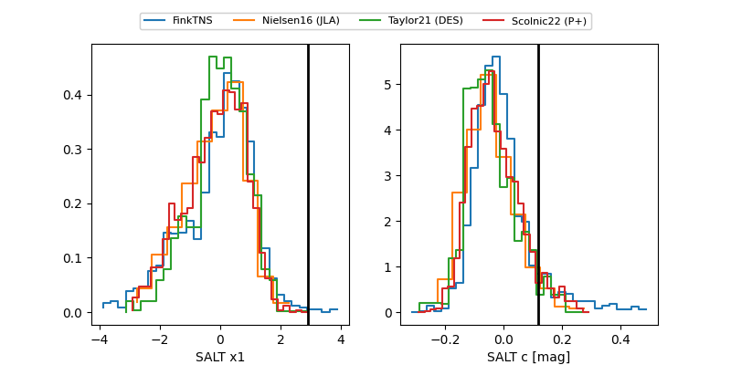

2025afhz
Target 2025afhz at 2025-12-21 15:02
Aliases and brokers:
FINK: fink-portal.org/ZTF25aceqsvl
Lasair: lasair-ztf.lsst.ac.uk/objects/ZTF25aceqsvl
ALeRCE: alerce.online/object/ZTF25aceqsvl
TNS: wis-tns.org/object/2025afhz
YSE: ziggy.ucolick.org/yse/transient_detail/2025afhz
alt names
ZTF25aceqsvl (ztf,fink_ztf)
2025afhz (tns,yse)
Coordinates:
equatorial (ra, dec) = 220.8030,+14.51466
equatorial (HMS+DMS) = 14:43:12.72,+14:30:52.79
galactic (l, b) = (12.7320,+61.09390)
Flags:
Photometry:
last ztfr=19.76
6 ztfr detections
Lightcurve

Visibility


Additional plots
